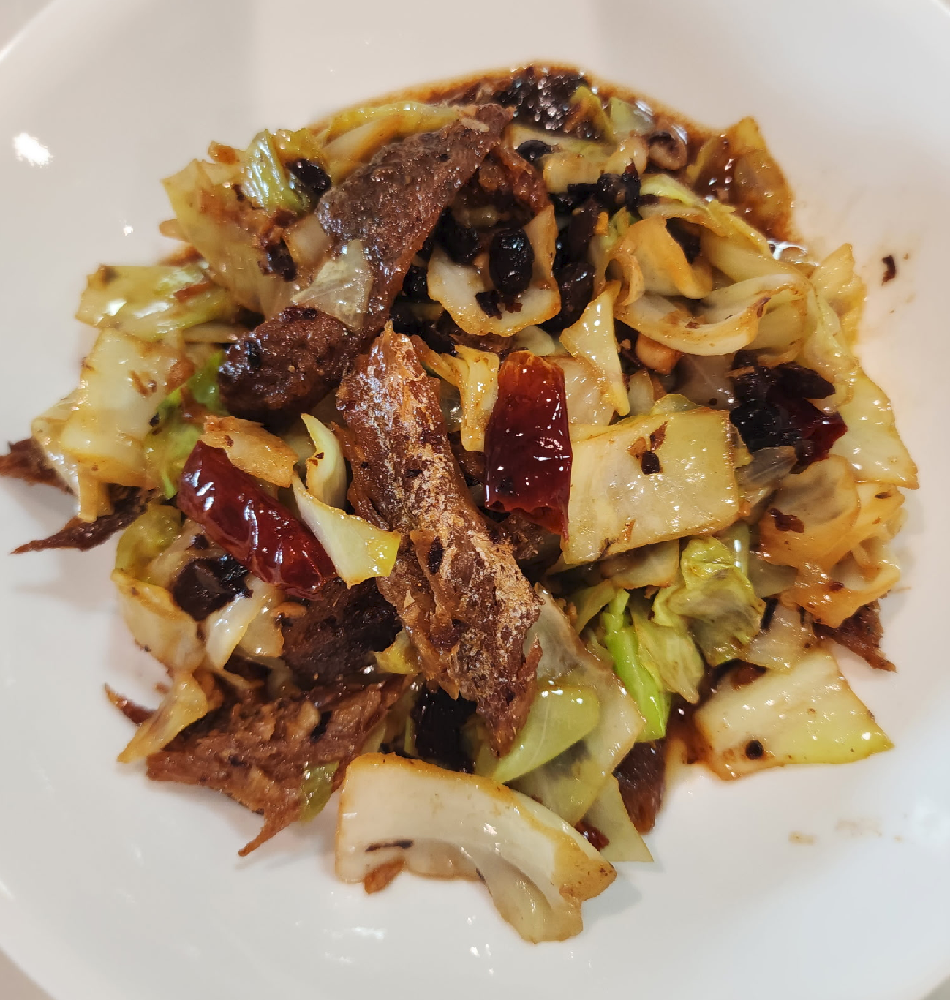

Cabbage and Fried Dace

Ingredients
- 400 g cabbage, chopped (see Notes)
- 184 g Fried Dace with Salted Black Beans (one can)
- 15-20 g garlic, minced (about 4 cloves)
- 15-20 g ginger, minced
- 6 dried chilies, halved (see Notes)
- 1 tbs cooking oil
- 1 tsp soy sauce
- 1 tbs oyster sauce
- 1 tsp chicken seasoning
- 1 tsp white pepper
Directions
- Prep Fish: Open the can, remove filets and beans, reserve the oil. Remove the spine if desired, then pull filets into small pieces.
- Prep Aromatics: Mince garlic and ginger. Halve chilies and remove seeds if preferred.
- Heat Wok: Heat the wok on high until smoking. Add the reserved dace oil plus 1 tbs additional oil.
- Stir-Fry Aromatics: Add ginger, garlic, and chilies; cook until fragrant.
- Cook Cabbage: Add cabbage, toss to coat, then add chicken seasoning and white pepper. Cover and cook 2-3 minutes, stirring occasionally.
- Add Fish: Add dace and black beans, stir well, then add oyster sauce and cook until the fish softens slightly.
- Serve: Transfer to a serving dish and serve with steamed rice.
Chef's Notes
- You can use any type of cabbage - green, bok choy, Napa, savoy, red cabbage, or even kale. Mixing varieties works well as long as everything is cut to a similar size.
- For less spice, trim the chilies and remove the seeds. For no heat at all, simply omit the chilies.
The Gumbo Page
Michael Fritsche
mbf@fritsche.org